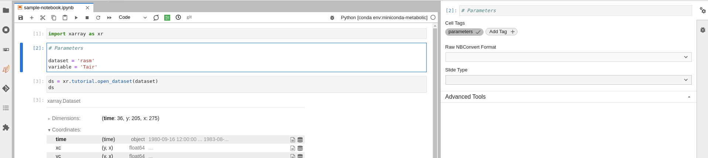
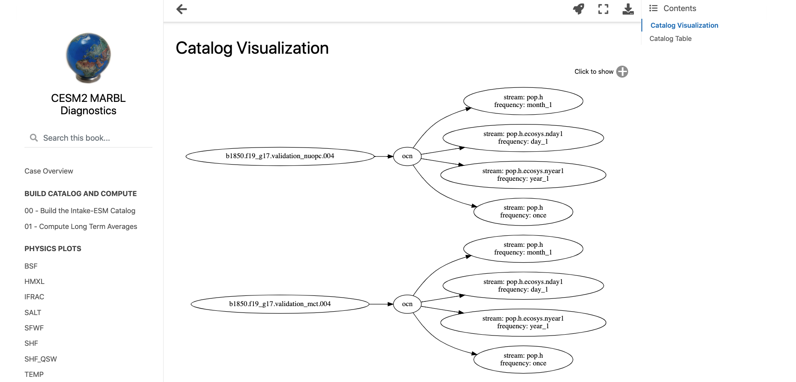

Posts tagged jupyter
Calculating Temporal Averages with GeoCAT-comp vs Xarray
- 29 November 2022
With temporally large datasets, computing seasonal and annual averages are a great ways to summarize the data and make it easier to manage and understand. You may want to take hourly, daily, or monthly data and compute seasonal or annual averages.
When using data that has a daily or finer resolution (e.g. hourly), calculating an annual average is simple. Every day and hour has the same length, so an unweighted average will work.

Batch Processing Jupyter Notebooks with Papermill
- 17 March 2022
Jupyter notebooks are really good for doing the heavy lifting of data analysis by:
Allowing you to showcase your work in a single place. You can see the complete “paper trail” of what was done. This includes the code, results, visuals and the narrative accompanying your analysis.
Reimagining Diagnostics Through the Use of the Jupyter Ecosystem
- 24 September 2021
Typically, diagnostics packages are written with following structure, using script-based workflows
Read files and do some preprocessing
Creating Model Documentation Using Jupyterbook and Intake-esm
- 25 June 2021
A common step to any project is documenting your data and your data workflow. Fortunately, open tools in the scientific python ecosystem make that much easier! In this example, we will cover creating your github repo, creating the catalog, visualizing the catalog, and generating a static webpage you can share with collaborators!
This week’s post is quite detailed, so just a warning! If you would like to look at the finished product, check out the following

HiRes-CESM Interactive Dashboard Example
- 19 March 2021
In this example, our goal is to create an interactive dashboard, using images already output on a remote server.
We are specifically interested in looking at plots created using the HighRes-CESM-Analysis repository.
Jupyter Notebooks Tutorial FAQ
- 03 March 2021
Here is a compilation of questions and issues that arose during the Jupyter Notebooks session of the Python Tutorial Seminar Series.
Q. I installed Miniconda but it doesn’t seem to be working. conda is not a recognized command. What should I do?